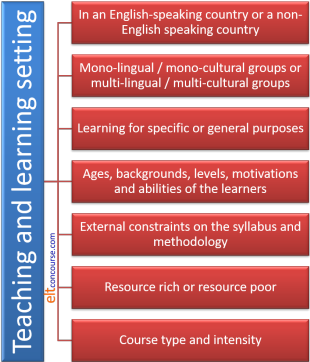

Delta Module Two: analysing language systems in the background essay

This guide concerns meeting the criteria for a Delta essay in section 3. The two criteria are:
Successful candidates can effectively demonstrate an understanding of the specific area by:
- analysing the specific area with accuracy, identifying key points
- showing awareness of a range of learning and teaching problems occurring in a range of learning contexts
The regulations for Delta state that you must prepare two
assignments focusing on systems rather than skills and they provide
you with the following choices: grammar, lexis, phonology or
discourse.
This is slightly bewildering for some who have been led to believe
by their reading that the systems are intertwined and much syntax is
affected by lexical meaning and phonology by issues of discourse and
so on. However, that is the way it is so your first step is to
identify into which of the four areas your assignment falls and make
that clear in the title.
In your analysis, you still need to be aware and show that you are
aware that the four areas singled out by Cambridge are not in
watertight compartments.
If you would like to consider a little more how issues of meaning
impact on syntax, try
the
guide to lexicogrammar (new tab).
This is a guide with examples, not a model.
There are a number of reasons why it is not possible to provide a
model analysis:
- When you select your topic area for a Language Systems Assignment, you will, naturally, focus on an area which your class needs to master. What that might be for you in your setting is unpredictable and any model analysis will almost certainly not be relevant in whole or in part.
- Once you have decided on your topic area, you will have to narrow down your focus by the level of learners you have in mind or by excluding some areas so that your analysis will be in adequate depth and not a low-level, superficial survey of the whole area. How you will do that is, again, not predictable, because it will depend on the nature of your students (past or present) and the focus of the lesson which you have in mind.
- No analysis, here or anywhere else, can be a complete model because the word count for Delta essays is severely limited to 2500 words overall and the analysis part of your essay is probably going to be around 1000 to 1500 words to allow you space to address all the other issues in the essay (introduction, scope identification, definitions, teaching suggestions etc.). This means that you will, perforce, have to leave out some interesting areas of the analysis which others might decide to include. What follows is, therefore, deliberately selective and incomplete but serves to demonstrate the level of depth and precision which is needed for Delta.
- It is a matter, often, of personal preference whether you:
- address the criteria individually by doing the analysis in a dedicated section and then linking the discussion to the difficulties learners and teachers have with the topic in a following section or
- combine the analysis with the discussion of learning and teaching problems as you go along. What follows takes a separated approach for the sake of clarity and cannot, therefore, stand as any kind of model for a combined approach.
- In this guide, we will be presenting models of analysis
drawn from a range of disparate language system areas so there
will be little sense, if any, of a coherent and cohesive
discussion. We will, whenever it seems relevant, give
examples of grammar areas, lexical system areas and functional
areas.
You, naturally, will make every effort to keep your analysis and discussion of problems consistently relevant to your essay title and to the limitations of the scope that you set out in the introduction. - Finally, this site takes a dim view of plagiarism, as does Cambridge English and all Delta centres. There is no intention here, then, to produce an analysis which can simply be copied and pasted into an essay. Try that and you will be found out.
 |
The three strands of the analysis |
For any systems background essay analysis, you need to consider three important, connected areas:
- Form:
The formal characteristics of the structure / grammar or lexical system that you are analysing. For this part of the analysis, you will need to go beyond references intended for learners, of course, or your discussion will lack depth, comprehensiveness and detail. - Meaning and Use:
The previous section is where you are discussing usage with a focus on form. Here, you need to focus on what the system does in terms of communication. - Pronunciation:
This may be the central focus of your assignment. In that case, it becomes number 1 on this list. For most essays, however, this is the third strand to the analysis.
This area may not be relevant at all if you are focused on the comprehension or production of written texts only. If that is your sole concern:- make sure you have justified not considering pronunciation in the introduction (perhaps because the system is almost wholly confined to written texts, for example, or because you are focusing only on learners' needs to comprehend and/or produce written texts)
- be careful to keep your focus on a system and do not stray into analysing listening or writing skills. That will mean you lose relevance and the readers lose patience.
 |
Formstructure and lexis |
This is, of course, the central starting point for any analysis
of structure. If your focus is phonological, then
pronunciation will be the first strand of the analysis to consider.
It is, in other words, the form.
Here, there are the matters of depth and detail to consider.
At Delta level, you need more of both than you may be accustomed to
considering on whatever pre-service course you have taken.
Here are two examples, one of inadequate depth but superficially
accurate analysis, the other of more depth and detail. It's
not too hard to pick which is which.
Accurate but inadequate:
The -ing form of a verb can function in three ways in English:
- as part of a continuous tense form, for example,
He is taking the train - as a gerund, for example,
She likes reading - as an adjective, for example,
She thinks he is interesting
In a bit more depth with more detail:
The non-finite -ing form of a verb can function in three ways in English:
- as part of a continuous tense form, for example,
She is taking the train
In this case, the aspect can be continuous, progressive or iterative. For example:
Shh! She's sleeping.
is progressive, denoting something currently in progress
I'm taking the train to work these days
is continuous because it refers to a background action which may not, in fact, currently be happening (the speaker may not be on the train)
Someone has been stealing food from the kitchen
indicates a repeated action (iterative) which has been occurring for some time and is affecting the present. - as a gerund, for example, She likes reading
This is a traditional analysis but, in fact, there is a cline from purely verbal uses such as:
I watched him painting the picture
through semi-verbal, non-finite uses (verbal nouns) such as:
Describing the events was difficult for her
to purely nominal uses (deverbal nouns) such as:
She loves the buildings - as an adjective, for example, She thinks he is
interesting.
The difficulty here is that adjectival uses are sometimes difficult to distinguish from purely verbal uses. An adjectival use, e.g.:
The film was exciting
with the copular be linking the subject and the adjective is clear.
But, semi-verbal, non-finite uses such as:
The flight was frightening
may be analysed as a verb and could be rephrased as
People were frightened by the flight
or as an adjective because it can be modified by an amplifying adverb as in
The flight was extremely frightening
In some cases, no verb is actually available so only an adjective can be the analysis, e.g.,
The book was uninspiring
where the adjective appears to be derived from a verb but for which there is no verb, uninspire.
On the other hand, adding an object noun phrase results in only the verbal use being considered as in, e.g.,
The film was frightening the children
in which no amplifying adverbial is allowable:
*The film was very frightening the children. - Care also needs to be taken, especially at lower levels, to
distinguish between the communicative function of -ing
adjectives formed from verbs and -ed adjectives formed
in the same way.
Thus, the rule needs to be consolidated that:
-ing adjectives refer to what a thing or a person is and -ed adjectives refer to how someone feels.
We can refer to what something was (the flight was frightening) or to how someone felt (I was frightened).
Considerations of the real difficulty in distinguishing between verbal uses of the -ed ending and non-verbal adjectival uses are beyond the scope of this analysis.
Nothing in the first example is actually wrong but the analysis
is at the level of a grammar book for learners and leaves out far
too much.
In the second example, there is greater use of terminology (to be
precise), greater depth of analysis (to point out the grey areas)
and better exemplification (to add detail).
The moral for Delta essays is:
- Use terminology accurately and appropriately and do not be satisfied with calling something simply an -ing form or whatever but notify the reader that you can handle concepts such as non-finite forms. This allows the analysis to be precise.
- Strive for more depth so it is clear to the reader that you are aware of the issues in the analysis and have researched beyond the level of pedagogic grammars. This will contribute to a sense of your having done proper research.
- Exemplify what you say clearly and comment on your examples to make it clear to the reader that you understand what you are saying. This contributes to the amount of detail you can provide.
Here are two more examples focusing on a lexical systems issue to see how the addition of precision, depth and detail is achieved. The first paragraph is accurate but lacks adequate depth, precision and detail. What follows exemplifies what is required at Delta level.
Collocation refers to the greater-than-chance occurrences of words in certain combinations. For example, a noun such as rain will collocate with a range of adjectives including light, heavy, unpleasant, thin and so on but not with other common adjectives such as strong or narrow which are superficially synonymous with some of those which do collocate with rain.
Two-part adjective-noun collocations in English are exceptionally frequent (reference here). They vary, however, in opacity, fixedness and strength. We can have, therefore,
- Strong but transparent and not fixed.
winding road
precipitous cliffs
which are examples of reasonably strong collocations although a number of other adjectives and nouns can be inserted into the slots to get, e.g.:
twisting / curving road
winding path / lane
sheer / steep cliffs
precipitous mountainside / drop
etc.
While these combinations are quite flexible, the number of nouns and adjectives which can be inserted is limited in a way that combinations with adjectives such as heavy or interesting or with nouns such as table or house are not. - Semi-fixed, semi-transparent strong collocations.
breathtaking stupidity
deafening silence
which are semi-fixed collocations with a metaphorical and extended use of the meaning of breathtaking and deafening.
In these cases, no other combination is possible if the meaning is to be retained. So, while:
heart-stopping stupidity
stunning stupidity
are both possible and
total silence
utter silence
are also possible, none carries the same sense as the original cliché. Neither of these combinations is purely transparent in meaning even if the items themselves are known because the adjectives are used metaphorically. - Fixed, opaque collocations.
Many of these are fixed expressions in English and have elements which occur only in this combination. They can be idioms, bi- or tri-nomials and a range of other chunks.
to and fro
hook, line and sinker
the black sheep (of the family)
a whale of a time
etc.
These sorts of collocation exhibit true non-compositionality because they cannot be understood by knowing the meaning of the items which make them up.
You would also, of course, especially with a focus on adjective-noun collocations be expected to say something accurate if not original about the fact that the relationship is rarely reciprocal. Some adjective attach naturally to a very limited range of nouns and vice versa.
 |
Meaning and Use (not usage)the present perfect simple |
This is the second strand of the analysis, whatever your focus.
It is here that you demonstrate that you understand the difference
between use (which focuses on the communicative value of the language) and usage
(which focuses only on its semantic significance).
Here, again, are two examples, the first drawing on pedagogical grammars
and the other, better one, drawing on more sophisticated resources.
The present perfect simple has three common uses:
- It expresses the experience (or not) of the speaker and
implies 'at some point in my life'. For example:
I have been to America
Have you seen the film?
I haven't ever spoken to her - It refers to an action (or its absence) in the recent past.
For example:
I have only just arrived
Have you really finished?
She hasn't spoken yet - It refers to an action or event (or its absence) which
continues into the present and may continue into the future.
For example:
I have lived here for 10 years
Have you worked there long?
He hasn't lived in the new house yet
There's not much wrong with this analysis, so far as it goes but at Delta level, we need more precision and to demonstrate more awareness. Here's what's meant:
The present perfect simple tense can
(following Lock et al) be described as a relational rather than an
absolute tense. In this respect, for example, the difference
between:
I ate the fish
and
I have eaten the fish
can be explained by the first having the capacity to be referenced
to an explicit past time so we can also have:
I ate the fish at nine o'clock / last month /
in the restaurant yesterday
etc.
A tense in the perfect aspect, however, relates one time to another
and does not refer to an absolute time but links two times together
so we can have:
I have eaten the fish (before now)
and don't recommend it (now)
but not
*I have eaten the fish last week.
The present perfect can refer to the perfective and
imperfective state of actions, states and events so we can have:
I have given up sugar (so please
don't give me any)
which refers to a perfective action that is completed but still
related to the present
and we can have, e.g.:
I have lived here for years (so I
know my way around)
which refers to an imperfective state that is not complete but still
relates the state to the present.
The present perfect always carries the sense of a past event, state
or action having consequences for the present, often enabling the
present in fact, and should properly be
described as a present tense, making reference to the past, rather
than a past tense making reference to the present, therefore, hence
its name. The tense embeds the past event in
the present.
The two phenomena, that the form is relational in meaning and that
it can apply to perfective and imperfective conditions explain the
three main uses which are often taught as separate and discrete
concepts.
And this analysis is far better in terms of precision, depth and detail. It draws on reading and research, is above the level of a pedagogic grammar or other texts and shows awareness of subtleties of use.
Pronunciationconnected speech: assimilation |
Unless you are focused only on written forms of the language and
have justified this limitation carefully in your introduction, this
is the third strand of your analysis.
At this level, you will be expected to use the phonemic script and
to have developed some system for representing intonation contours and
stress. For individual sounds and features of connected
speech, there is a clear, conventional system (although details may
vary) and you should use it. For intonation and stress, there
are no profession-wide conventions so you need to develop something
you are comfortable using and which enables you to analyse and
exemplify what you are describing.
This site uses a variety and elsewhere in the relevant sections,
you will find, for example:
which shows the intonation contour on a non-defining relative
clause.


which show three ways to highlight word stress.
which show the six frequently identified intonation patterns in
English.
And so on.
Again, we'll contrast a pre-Delta level example with what you need to do at this level.
At the borders between words a number of things can happen:
- sounds can change. For example:
- if you say when possible quickly, the 'n' at the end of when can sound like a 'm' because your lips are already moving to make the sound of 'p'
- sounds can move. For example:
- when you say an apple quickly, it can sound like a napple.
- sounds can disappear. For example:
- when you say a clothes line quickly, it usually sounds like a close line.
sounds can appear. For example: - when you say law and order quickly, it sounds like there is a 'r' sound before the word and.
Again, there is nothing in the above which is actually wrong.
It lacks, however, very much rigour and is non-technical. The
analysis at Delta level would probably only be focusing on one or
two of these phenomena, your selection having been made and
justified in terms of key aspects of the form you have been
analysing up to now.
If, however, your focus is connected
speech features in English, then you will certainly need to cover
all these phenomena and more. Here's how it might be done with
a bit more academic credibility at Delta level (taken mostly from
the in-service guide to features of connected speech). We will
only consider the first of the points above (assimilation) but the principle
and the depth of analysis will be the same at Delta level for the
other three.
Assimilation
This occurs when a sound is altered because the speaker is
anticipating the following sound or influenced by a previous one (or
both).
There are three possibilities:
- Regressive or anticipatory assimilation:
For example,
ten bottles (which is transcribed as /ten ˈbɒt.əlz/ in careful or citation forms)
sounds like
tem bottles (which is transcribed as /tem ˈbɒt.əlz/)
because the speaker is anticipating the bilabial voiced consonant /b/ and changes the alveolar nasal /n/ to the bilabial /m/ to make pronouncing the /b/ easier.
And in, for example:
his son and his daughter
the phrase, when spoken quickly is transcribed as
/hɪz sʌn ndɪs ˈdɔː.tə/
because the 's' in his daughter is not voiced as it is in his son.
Within this example, too, is a case of elision of the /h/ on the second occurrence of his. - Progressive assimilation:
Sounds may change because the speaker is influenced by the preceding sound. For example,
There's not much cider left
said quickly.
Normally, the 'c' in cider is pronounced /s/ in careful or citation form (/ˈsaɪ.də/).
However, in this environment, the influence of the /tʃ/ at the end of much means that the 'c' in cider is pronounced as /ʃ/. - Reciprocal or coalescent assimilation:
Here, sounds influence each other and may fuse together. For example,
Won't you come with us?
When this clause is spoken quickly, won't you is not pronounced as /wəʊnt ju/ as it would be in slow careful speech but is pronounced /wəʊntʃu/.
The /t/ and /j/ sounds have coalesced to make the /tʃ/ sound.
Assimilation also explains the tendency in English to change prefixes, using 'im-' before words beginning with bilabials (so we have impossible, impolite, immobile etc. rather than *inpossible, *inpolite, *inmobile).
 |
Levels and types of analyses |
We are going to belabour this point because at this level of training, it is crucial. At initial training levels, say on a CELTA or Trinity TESOL course, most analysis of language starts and stops at structure (including some phonology) and a bit on meaning. That is not good enough now, although it still needs to be done, of course.
For our example, we are going to look at this question from an on-line, ask-me-anything site designed for people to help other people get things right. Sometimes such things work well. Here's the question:
How do I analyse a sentence such as It may be that you are right?
Well, how will you? Think for a moment
and then click here
 .
.
And here's an answer.
- Grammatically / formally: purely in terms of clause structure and structural linguistics, we have:
-
- It – the neutral subject pronoun (3rd person singular)
- may – the finite modal auxiliary verb
- be – the bare non-finite infinitive verb
- that – a subordinating conjunction which links to hypotheses or propositions
- you – the personal subject pronoun (2nd person)
- are – the finite 2nd-person form of be
-
right – the adjective
complement phrase of that verb
b. and c. form the first verb phrase
d., e., f. and g. form the complement of the first verb phrase (not the object).
And so on.
OK?
We can make any number of parallel sentences following this pattern in English such as:
It will transpire that you are fishy
and millions more and some may even mean something useful. We know that, by the rules of English syntax, they will all be well formed.
We can also go on here to look at the pronunciation, including intonation, stress and other prosodic features but that would try your patience.
Just because you can do that, does not mean you are a user of English, however (although it obviously helps a bit). - Semantically: if by ‘real’, you refer to the meaning of the clauses – its semantic content – then we need a different sort of analysis to get at what you want to know about ‘structure’ rather than grammar, per se.
- It – is a dummy subject with no referent (antecedent) and is used merely to state that something or some proposition / hypothesis exists.
- The dummy subject is connected to the predicate by the copular verb be which is modified for the expression of epistemic modality (likelihood of truth) by the modal auxiliary verb may.
-
the rest of the sentence is the complement of that verb and is
nominalised (made into a noun).
It could be fronted and retain the core meaning so we could have:
That you are right may be (the case)
It refers to a proposition and could be encapsulated in a shell noun such as idea or assumption. - Pragmatically / functionally, we can have another look.
-
-
In functional terms, the sentence represents what is called
ideational meaning – the representation of a
proposition or truth.
Language is used for many other purposes, often dependent on the verb nature, such as behavioural meanings (go, sneeze), material actions (break, explode), mental processes (think, believe) and verbal processes (say, explain).
In this case, we have an existential meaning (something exists in the first clause) and a relational meaning (something is the same as it in the second clause). The verb of choice here is be. - Here, the Field of discourse is called experiential because we are dealing with the exchange of information between (probably) speakers (but it would not matter if it were written).
- The Tenor is interpersonal revealed by the use of may. Such verbs are used between people socially.
- The Mode is probably oral-aural, face-to-face but might not be.
- The speaker has selected the pronoun it as the Theme of the sentence and it’s jumping-off point. All that follows is the Rheme. The reason for this is that he/she wishes to make it clear that it is communicatively important to repeat the Theme later. Thinking ahead is part of language production.
-
Within the Rheme, we have that you are right and
that lies in apposition to the pronoun it (i.e.,
they are co-referential).
People do not usually repeat such things randomly so we are looking for the communicative value of doing this. -
And, Lo!, we will probably find it in an exchange between
cooperative speakers because the next contribution will more
than likely be something like:
Oh, thanks, so what do we do about it (the fact that I’m right)?
or something like:
… and if so, we need to do something about it, don’t we?
etc.
We cannot, of course, predict what will follow or even who will contribute but it will almost certainly not be:
The current temperature of sensor c. on the James Webb Telescope is 6 degrees Kelvin
-
In functional terms, the sentence represents what is called
ideational meaning – the representation of a
proposition or truth.
We are analysing only the significance of the language here and make no attempt to look at its communicative
value in any kind of exchange between users of language.
That is, of course, completely artificial and context free but is the way many teachers might explain things (and, far too often, when they stop explaining).
All of this, and all other attempts to analyse language are:
- Arguable and amendable in the light of better research and better thinking.
- Necessary for a better understanding of a devilishly complicated phenomenon that we all use almost unconsciously all our waking lives.
- Not the end of the story.
Now, it is not the case that you have to do all of these sorts of
analyses (but you do have to do some good analysis) or that you
can't entwine the analysis carefully to make connections between
semantic, structural and pragmatic intention clear.
What you most certainly do have to do is consider the levels and
types of analyses which will best suit your concerns both in the
essay and in the lesson.
Much of what you do here will be paralleled (no, not repeated) in
the language analysis you do in the plan for the targets of the
lesson.
 |
Learning and teaching problems |
If you have already followed the guide to analysing skills for Delta, the following will be familiar. Click here to skip it and go to the section specifically about learning and teaching problems with systems.
Delta criterion 3b) for the background essay states that you have to show:
awareness of a range of learning and teaching problems occurring in a range of learning contexts
Actually, you have to do a bit more than show awareness,
you have to be able to describe, and propose solutions (later) for,
a range of problems in a range of
contexts.
Elsewhere, we have glossed this criterion as meaning that you
need to:
- Consider your own setting
- Think outside your own setting to show that you are aware of other possibilities
- Know how other languages work both in terms of systems and skills (not just your own learners' languages)
We'll take these one at a time.
 |
Your setting and others |
Settings vary. Here's what you need to consider:

The easiest way to approach this is to contrast and compare your setting with others that you have worked in, imagined, considered or read about.
 |
WARNING |
Do not focus in too much detail on the particular class you have in mind to teach for the assignment. Considerations of individuals and classes belong in the Commentary to the lesson plan. Here you must take a broader view of settings in which find yourself and those beyond your own current experience.
Here are some examples of what to write about and what to avoid:
| Do not write | Prefer | because |
| My class is made up of adult professional people who need these turn-taking skills in the work places. | With adult professional learners such
as I am teaching, the need for in-work interactions with
colleagues and superiors is very important because the
businesses they work in use English as the lingua franca.
However, all learners, especially those who live and work or
study (or intend to) in a native-speaking setting need to
master turn-taking skills if they are successfully to take
part in context-specific or more general social
interactions. Turn-taking, even in English, in non-English speaking settings is, however, often constrained not by the norms of Anglophone cultures but by the surrounding culture's norms and this presents difficulties. Additionally, opportunities to practise the skill outside the classroom will be rarer in such cases and this needs to be compensated for in the classroom with more opportunities for practice (see below, section 4.3). |
You are demonstrating that you know
that speaking skills are variable across cultures and you
realise some of the implications of this. You are also referring to pedagogic solutions which you will later discuss. (Do not forget to do so.) |
| I teach my current class for one hour every week so the learners often forget items taught from week to week. | Grammatical and lexical structures need constant recycling in order to be fixed in learners' long-term memories. Some estimates (e.g., Conti, 1997: 243) suggest new lexical items need to be encountered 5 to 8 times to ensure learning. In my setting, in which I only teach my groups for one hour a week, this is particularly challenging because of the gap in time between lessons and the opportunities this provides to forget items taught. On more intensive courses, this problem is less apparent because items can be recycled more frequently with shorter gaps between sessions. (See 4.4 for a proposed solution.) | You are demonstrating awareness of
cognitive and memory constraints in different settings. You have done some research. |
| My school is very well equipped so the use of web-based video resources is appropriate and effective. | In
well-resourced teaching settings, such as I enjoy, the availability of web-based video recordings of
different forms of presentations is a boon in terms of
getting learners to notice the staging analysed above. In less well-resourced environments, however, this is not possible and a constraint on the teacher is imposed which may mean that it is less easy to exemplify the staging and structure of academic presentations. In section 4.5, I propose a solution. |
You are considering other settings outside your own and using teacherly intuition to imagine the teaching difficulty this imposes. |
| Because my students live and work in Sydney they need interactional skills daily. | Learners who
are permanently or temporarily resident in a
native-English-speaking country clearly need these skills on
a daily basis. This is not, however, the case elsewhere and opportunities for practice are concomitantly lower. However, even learners in non-native-English speaking environments may often need to interact with other first- or second-language speakers of English (for example, in countries where English is an official or de facto national language such as it is in many African states). The ability, therefore to recognise when to combine a Response with an Initiation is still something that needs to be taught rather than assumed. |
Because you are getting away from your own setting and considering how the issues might be different elsewhere. Even if you have never taught in the settings you mention, the fact that you have considered them rationally is a strong point to make. |
| My class is preparing for the IELTS examination. | Currently, I
am teaching learners preparing to take IELTS who often fail
to distinguish between these two genres and produce texts
which are unconventional and confusing for the reader. Beyond this setting, however, the IELTS examination is intended to test whether the skills can be deployed in real-life settings so the generic structures I have identified in this essay are still difficult for them to acquire yet important. |
Because you have made it clear that an examination which your, or other, learners are preparing to take is not an end in itself but a means of demonstrating abilities to perform in real-life settings. |
| My Italian learners have difficulties with these verbs because the structures do not exist in Italian. | My current
classes consist overwhelmingly of Italian speakers who, in
common with users of other Romance languages such as Spanish,
Romanian and French often avoid the use of multi-word verbs,
preferring, for example, postpone to put off and collapse to
break down. Speakers of other languages which have something akin to these structures (such as Germanic languages) will be less reluctant to learn and use them. |
You have gone beyond description to consider the implications and the learning / teaching problems and advantages that first-languages structures may give rise to. |
Learning and Teaching problems with systems
You may, as was noted above, choose to consider problems for
learning and teaching simultaneously with the analysis and that is a
legitimate approach. For clarity's sake here, however, we
shall consider them separately but use some of the same examples that we
have used so far for analysis.
When you come to discuss learning and teaching problems, you need to
do three connected things:
- Consider your own setting and then
- Think outside your own setting to show that you are aware of other possibilities
- Know how other languages work both in terms of systems and skills. Do not only focus on the 1st languages of your own students.
Additionally, if you have restricted your focus by level of
learners, you need constantly to refer to this restriction and make
sure that you don't stray into areas which are clearly too difficult
or too easy.
Here are some examples and, again, they are just that, not models
for all the reasons explained above.
 |
Problems with formthe -ing forms |
- Positively, there are in English no irregular forms of the -ing verb so learners have little difficulty with the mechanics of the structure once the issue of 'e'-dropping (shave > shaving) has been mastered. It can, indeed, lead to its overuse (see below).
- I have noted that problems with the -ing form used
as a noun occur regular at lower levels in particular because
many languages do not have equivalent forms or use the forms
differently. Compounding the problem is the fact that
English has an identical form for all three grammatical
functions (progressive aspect, noun and adjective). For
example:
- while German has a gerund form it is much more rarely
used so, for example,
I like walking
would usually be expressed verbally rather than with a noun as
ich laufe gern [literally, I walk willingly]
This can lead to errors such as:
*I enjoy walk - French-speaking learners and others with Romance first
languages also encounter difficulties with the form because
the infinitive form of the verb is used to perform the
nominal function so learners will often be tempted to
produce
I enjoy to walk
or
I enjoy walk
by analogy with, e.g., the French form
J'aime marcher - Italian or Greek speakers may occasionally produce
Walk pleases me
by analogy with:
Mi piace camminare
Μου αρέσει το περπάτημα [mou aresi to perpatisma]
both of which translate as something akin to
It pleases me the walking
- while German has a gerund form it is much more rarely
used so, for example,
- These issues carry over into the use of the form as a
progressive, which is something many languages do not exhibit,
using the same form of the verb to express both simple and
progressive aspect. This can lead to avoidance of the form
altogether and errors such as
*I travel to work by bus this week
*I watched TV when he called
Speakers from a variety of languages both European and East Asian will have difficulties knowing when to use the -ing form for background, continuous, iterative or progressive events. - Because the form is regular and simple in English some
learners may be tempted to overuse it. Its use avoids
forming an irregular past of which, at lower levels, they may
not be sure. This can lead to errors such as:
*I was eating lunch in the canteen when I was at school - Distinguishing between adjectival and verbal uses of the
form is often not necessary (even when it can be definitively
achieved) but at times the distinction needs to be clear or
errors such as the use of a dynamic verb form with a modifier
can occur, such as:
*She is very explaining
*She is extremely helping
by analogy with
She is very boring
 |
Problems with meaning and usethe present perfect simple |
- The primary problem with the form in terms of meaning and
use stems from the fact that very few languages make the
aspectual distinctions that English does or, if they do
distinguish perfect vs. simple aspects, do so in a way that is
clearly not parallelled in English. For example:
- Languages with parallel forms such as German and Dutch
do not make a difference in meaning so, for example:
I have loved
can be translated as either
ich liebte
or
ich habe geliebt
with no real distinction in meaning.
Speakers of other Germanic languages (including Scandinavian languages) may therefore produce almost random errors such as:
*I have eaten lunch at one o'clock
*I didn't go to university yet
etc. - Greek, too, has a parallel structure with an emphasis on
the immediate effect of a previous action (like English) so
the implication of, e.g.:
I have booked
is that I now want to claim my room
will not be difficult.
However, the language does not use this form for the sense of 'in my life up to now' when a simple form is preferred so Greek speakers may produce errors such as:
I spent the money already. - Speakers of Romance languages such as French may make
similar errors because the translation of both
I spent
and
I have spent
will often be simply
J'ai dépensé
- Languages with parallel forms such as German and Dutch
do not make a difference in meaning so, for example:
- Error can also be produced by materials which emphasise the
forms of time adjuncts which are used with simple and perfect
aspects rather than concept of the tense form itself so a
learners who has been told, e.g., that
"We use for + a time period with the present perfect simple"
may, understandably, produce:
*I have lived in Germany for two years and then I have moved to England
in which the simple form of the tense would be more appropriate.
In teaching, therefore, it is important to tackle the issue from the point of view that it is the meaning of the form which determines the appropriate time adjuncts to use and not the other way around. - The fact that the present impact of the event or state being described is the paramount consideration may also be lost on learners who have been trained in using the form purely for the three uses analysed above. The key issue here is to make it clear in the teaching process that there is a distinction in English between an absolute tense, such as the past simple, and a relational tense form such as the past, present and future perfect. Absolute tense forms situate an event, action or state in time; relational tense forms connect times.
- In terms of teaching problems, the provision of a clear
context is not too challenging but it is much more challenging
to impress on learners that the perfect form implies that the
speaker sees an event as currently significant even when it is
clearly perfective in nature and completed. This is
especially true for learners who have been told that the tense
form solely expresses the idea of 'up to now'. This can
lead to error comprehending and producing the difference for
example, between:
I have learned French (so can speak some)
and
I learnt French at school (but have forgotten it)
Problems with pronunciationassimilation |
This is an area where it makes eminent sense to consider learning and teaching problems in tandem with each section of the analysis because reference back to the analysis is less easy to achieve clearly. Here are some examples of the sorts of things that should be considered in these inserted points.
Two types of problem arise in terms of pronunciation:
- Problems of comprehension
- Learners who have been taught the pronunciation of items
in isolation may well not recognise the forms when they are
spoken rapidly.
Progressive assimilation, in particular can cause learners to misinterpret or simply not recognise that, e.g.:
The captain will be here later
when it is pronounced as
/ðə ˈkæp.m wl bi hɪə ˈleɪ.tə/
rather than as
/ðə ˈkæp.tɪn wəl bi hɪə ˈleɪ.tə/ - Coalescent assimilation will often result in non-comprehension, especially at lower levels because, as we saw, won't you can often be rendered as /wəʊntʃu/.
- Learners who have been taught the pronunciation of items
in isolation may well not recognise the forms when they are
spoken rapidly.
- Problems of production
In this area there is little chance that learners will be misunderstood by even an intolerant native speaker. However, the non-production of assimilating sounds will frequently make a learner sound unnaturally formal and careful in speech as well as having the effect of slowing his or her production, often to an unacceptable extent. Producing, for example, for the phrase bad beer:
/bæd ˈbɪə/
instead of
/bæb ˈbɪə/
not only takes longer and is more difficult, it makes the speaker sound unnatural.
When you are researching issues for learners, you may find references on this site to how other languages deal with a range of systems issues in English helpful. A section of the A-Z index on this site has links to guides which consider such matters.
 |
Another WARNING |
When you are researching a systems area in English, you will,
probably, be tempted to use a search engine to find out what others
say about the topic. That's entirely legitimate and, in many
circumstances, unavoidable.
However, it is an unfortunate fact that many websites are very
poorly written and in many cases, plain wrong.
For examples of what is meant and some advice concerning the sorts
of sites you should be using, go to
the guide to researching language online (new tab).